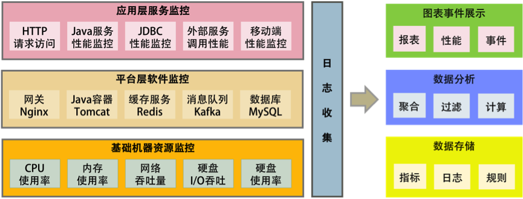
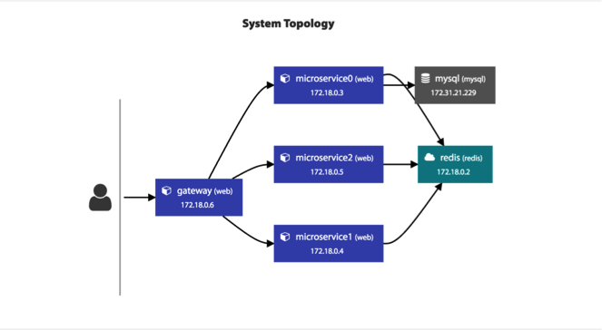
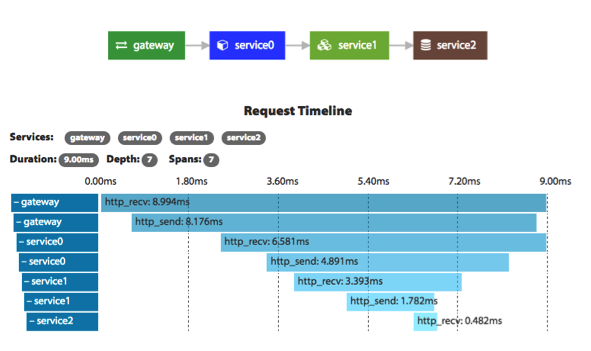
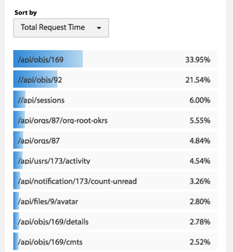
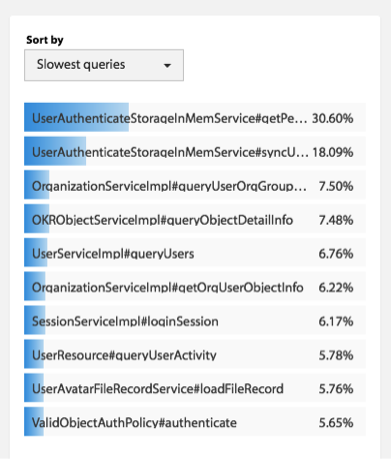
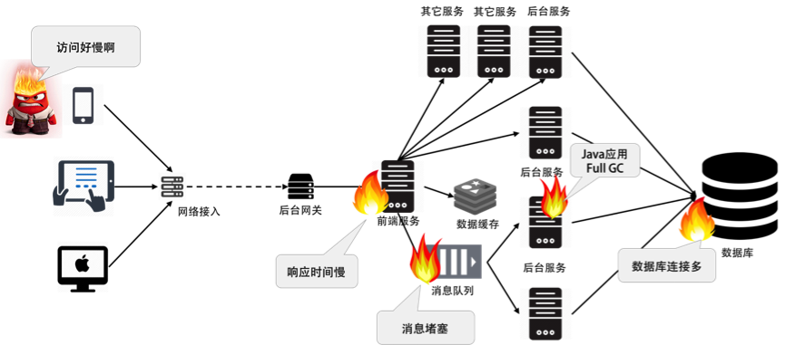

- 000 开篇词 洞悉技术的本质，享受科技的乐趣.md.html
- 001 程序员如何用技术变现（上）.md.html
- 002 程序员如何用技术变现（下）.md.html
- 003 Equifax信息泄露始末.md.html
- 004 从Equifax信息泄露看数据安全.md.html
- 005 何为技术领导力.md.html
- 006 如何拥有技术领导力.md.html
- 007 推荐阅读：每个程序员都该知道的事.md.html
- 008 Go语言，Docker和新技术.md.html
- 009 答疑解惑：渴望、热情和选择.md.html
- 010 如何成为一个大家愿意追随的Leader？.md.html
- 011 程序中的错误处理：错误返回码和异常捕捉.md.html
- 012 程序中的错误处理：异步编程和最佳实践.md.html
- 013 魔数 0x5f3759df.md.html
- 014 推荐阅读：机器学习101.md.html
- 015 时间管理：同扭曲时间的事儿抗争.md.html
- 016 时间管理：投资赚取时间.md.html
- 017 故障处理最佳实践：应对故障.md.html
- 018 故障处理最佳实践：故障改进.md.html
- 019 答疑解惑：我们应该能够识别的表象和本质.md.html
- 020 分布式系统架构的冰与火.md.html
- 021 从亚马逊的实践，谈分布式系统的难点.md.html
- 022 分布式系统的技术栈.md.html
- 023 分布式系统关键技术：全栈监控.md.html
- 024 分布式系统关键技术：服务调度.md.html
- 025 分布式系统关键技术：流量与数据调度.md.html
- 026 洞悉PaaS平台的本质.md.html
- 027 推荐阅读：分布式系统架构经典资料.md.html
- 028 编程范式游记（1）- 起源.md.html
- 029 编程范式游记（2）- 泛型编程.md.html
- 030 编程范式游记（3） - 类型系统和泛型的本质.md.html
- 031 Git协同工作流，你该怎样选.md.html
- 032 推荐阅读：分布式数据调度相关论文.md.html
- 033 编程范式游记（4）- 函数式编程.md.html
- 034 编程范式游记（5）- 修饰器模式.md.html
- 035 编程范式游记（6）- 面向对象编程.md.html
- 036 编程范式游记（7）- 基于原型的编程范式.md.html
- 037 编程范式游记（8）- Go 语言的委托模式.md.html
- 038 编程范式游记（9）- 编程的本质.md.html
- 039 编程范式游记（10）- 逻辑编程范式.md.html
- 040 编程范式游记（11）- 程序世界里的编程范式.md.html
- 041 弹力设计篇之“认识故障和弹力设计”.md.html
- 042 弹力设计篇之“隔离设计”.md.html
- 043 弹力设计篇之“异步通讯设计”.md.html
- 044 弹力设计篇之“幂等性设计”.md.html
- 045 弹力设计篇之“服务的状态”.md.html
- 046 弹力设计篇之“补偿事务”.md.html
- 047 弹力设计篇之“重试设计”.md.html
- 048 弹力设计篇之“熔断设计”.md.html
- 049 弹力设计篇之“限流设计”.md.html
- 050 弹力设计篇之“降级设计”.md.html
- 051 弹力设计篇之“弹力设计总结”.md.html
- 052 区块链技术 - 区块链的革命性及技术概要.md.html
- 053 区块链技术 - 区块链技术细节 - 哈希算法.md.html
- 054 区块链技术 - 区块链技术细节 - 加密和挖矿.md.html
- 055 区块链技术 - 去中心化的共识机制.md.html
- 056 区块链技术 - 智能合约.md.html
- 057 区块链技术 - 传统金融和虚拟货币.md.html
- 058 管理设计篇之分布式锁.md.html
- 059 管理设计篇之配置中心.md.html
- 060 管理设计篇之边车模式.md.html
- 061 管理设计篇之服务网格.md.html
- 062 管理设计篇之网关模式.md.html
- 063 管理设计篇之部署升级策略.md.html
- 064 性能设计篇之缓存.md.html
- 065 性能设计篇之异步处理.md.html
- 066 性能设计篇之数据库扩展.md.html
- 067 性能设计篇之秒杀.md.html
- 068 性能设计篇之边缘计算.md.html
- 069 程序员练级攻略（2018）：开篇词.md.html
- 070 程序员练级攻略（2018）：零基础启蒙.md.html
- 071 程序员练级攻略（2018）：正式入门.md.html
- 072 程序员练级攻略（2018）：程序员修养.md.html
- 073 程序员练级攻略（2018）：编程语言.md.html
- 074 程序员练级攻略：理论学科.md.html
- 075 程序员练级攻略（2018）：系统知识.md.html
- 076 程序员练级攻略（2018）：软件设计.md.html
- 077 程序员练级攻略（2018）：Linux系统、内存和网络.md.html
- 078 程序员练级攻略（2018）：异步IO模型和Lock-Free编程.md.html
- 079 程序员练级攻略（2018）：Java底层知识.md.html
- 080 程序员练级攻略（2018）：数据库.md.html
- 081 程序员练级攻略（2018）：分布式架构入门.md.html
- 082 程序员练级攻略（2018）：分布式架构经典图书和论文.md.html
- 083 程序员练级攻略（2018）：分布式架构工程设计.md.html
- 084 程序员练级攻略（2018）：微服务.md.html
- 085 程序员练级攻略（2018）：容器化和自动化运维.md.html
- 086 程序员练级攻略（2018）：机器学习和人工智能.md.html
- 087 程序员练级攻略（2018）：前端基础和底层原理.md.html
- 088 程序员练级攻略（2018）：前端性能优化和框架.md.html
- 089 程序员练级攻略（2018）：UIUX设计.md.html
- 090 程序员练级攻略（2018）：技术资源集散地.md.html
- 091 程序员面试攻略：面试前的准备.md.html
- 092 程序员面试攻略：面试中的技巧.md.html
- 093 程序员面试攻略：面试风格.md.html
- 094 程序员面试攻略：实力才是王中王.md.html
- 095 高效学习：端正学习态度.md.html
- 096 高效学习：源头、原理和知识地图.md.html
- 097 高效学习：深度，归纳和坚持实践.md.html
- 098 高效学习：如何学习和阅读代码.md.html
- 099 高效学习：面对枯燥和量大的知识.md.html
- 100 高效沟通：Talk和Code同等重要.md.html
- 101 高效沟通：沟通阻碍和应对方法.md.html
- 102 高效沟通：沟通方式及技巧.md.html
- 103 高效沟通：沟通技术.md.html
- 104 高效沟通：好老板要善于提问.md.html
- 105 高效沟通：好好说话的艺术.md.html
- 106 加餐 谈谈我的“三观”.md.html
- 107 结束语 业精于勤，行成于思.md.html
023 分布式系统关键技术：全栈监控
首先，我们需要一个全栈系统监控的东西。它就像是我们的眼睛，没有它，我们就不知道系统到底发生了什么，我们将无法管理或是运维整个分布式系统。所以，这个系统是非常非常关键的。
而在分布式或 Cloud Native 的情况下，系统分成多层，服务各种关联，需要监控的东西特别多。没有一个好的监控系统，我们将无法进行自动化运维和资源调度。
这个监控系统需要完成的功能为：
- 全栈监控；
- 关联分析；
- 跨系统调用的串联；
- 实时报警和自动处置；
- 系统性能分析。
多层体系的监控
所谓全栈监控，其实就是三层监控。
- 基础层：监控主机和底层资源。比如：CPU、内存、网络吞吐、硬盘 I/O、硬盘使用等。
- 中间层：就是中间件层的监控。比如：Nginx、Redis、ActiveMQ、Kafka、MySQL、Tomcat 等。
- 应用层：监控应用层的使用。比如：HTTP 访问的吞吐量、响应时间、返回码，调用链路分析，性能瓶颈，还包括用户端的监控。

这还需要一些监控的标准化。
- 日志数据结构化；
- 监控数据格式标准化；
- 统一的监控平台；
- 统一的日志分析。
什么才是好的监控系统
这里还要多说一句，现在我们的很多监控系统都做得很不好，它们主要有两个很大的问题。
- 监控数据是隔离开来的。因为公司分工的问题，开发、应用运维、系统运维，各管各的，所以很多公司的监控系统也是各是各的，完全串不起来。
- 监控的数据项太多。有些公司的运维团队把监控的数据项多做为一个亮点到处讲，比如监控指标达到 5 万多个。老实说，这太丢人了。因为信息太多等于没有信息，抓不住重点的监控才会做成这个样子，完全就是使蛮力的做法。
一个好的监控系统应该有以下几个特征。
- 关注于整体应用的 SLA。主要从为用户服务的 API 来监控整个系统。
- 关联指标聚合。 把有关联的系统及其指标聚合展示。主要是三层系统数据：基础层、平台中间件层和应用层。其中，最重要的是把服务和相关的中间件以及主机关联在一起，服务有可能运行在 Docker 中，也有可能运行在微服务平台上的多个 JVM 中，也有可能运行在 Tomcat 中。总之，无论运行在哪里，我们都需要把服务的具体实例和主机关联在一起，否则，对于一个分布式系统来说，定位问题犹如大海捞针。
- 快速故障定位。 对于现有的系统来说，故障总是会发生的，而且还会频繁发生。故障发生不可怕，可怕的是故障的恢复时间过长。所以，快速地定位故障就相当关键。快速定位问题需要对整个分布式系统做一个用户请求跟踪的 trace 监控，我们需要监控到所有的请求在分布式系统中的调用链，这个事最好是做成没有侵入性的。
换句话说，一个好的监控系统主要是为以下两个场景所设计的。
“体检”
- 容量管理。 提供一个全局的系统运行时数据的展示，可以让工程师团队知道是否需要增加机器或者其它资源。
- 性能管理。可以通过查看大盘，找到系统瓶颈，并有针对性地优化系统和相应代码。
“急诊”
- 定位问题。可以快速地暴露并找到问题的发生点，帮助技术人员诊断问题。
- 性能分析。当出现非预期的流量提升时，可以快速地找到系统的瓶颈，并可以帮助开发人员深入代码。
只有做到了上述的这些才能是一个好的监控系统。
如何做出一个好的监控系统
下面是我认为一个好的监控系统应该实现的东西。
- 服务调用链跟踪。这个监控系统应该从对外的 API 开始，然后将后台的实际服务给关联起来，再将这个服务的依赖服务给关联起来，直到最后一个服务（如 MySQL 或 Redis），这样就可以把整个系统的服务全部都串连起来了。这个事情的最佳实践是 Google Dapper 系统，其对应于开源的实现是 Zipkin。对于 Java 类的服务，我们可以使用字节码技术进行字节码注入，做到代码无侵入式。
如下图所示（截图来自我做的一个 APM 的监控系统）。

- 服务调用时长分布。使用 Zipkin, 可以看到一个服务调用链上的时间分布，这样有助于我们知道最耗时的服务是什么。下图是 Zipkin 的服务调用时间分布。

- 服务的 TOP N 视图。所谓 TOP N 视图就是一个系统请求的排名情况。一般来说，这个排名会有三种排名的方法：a）按调用量排名，b) 按请求最耗时排名，c）按热点排名（一个时间段内的请求次数的响应时间和）。

- 数据库操作关联。对于 Java 应用，我们可以很方便地通过 JavaAgent 字节码注入技术拿到 JDBC 执行数据库操作的执行时间。对此，我们可以和相关的请求对应起来。

- 服务资源跟踪。我们的服务可能运行在物理机上，也可能运行在虚拟机里，还可能运行在一个 Docker 的容器里，Docker 容器又运行在物理机或是虚拟机上。我们需要把服务运行的机器节点上的数据（如 CPU、MEM、I/O、DISK、NETWORK）关联起来。
这样一来，我们就可以知道服务和基础层资源的关系。如果是 Java 应用，我们还要和 JVM 里的东西进行关联，这样我们才能知道服务所运行的 JVM 中的情况（比如 GC 的情况）。
有了这些数据上的关联，我们就可以达到如下的目标。
- 当一台机器挂掉是因为 CPU 或 I/O 过高的时候，我们马上可以知道其会影响到哪些对外服务的 API。
- 当一个服务响应过慢的时候，我们马上能关联出来是否在做 Java GC，或是其所在的计算结点上是否有资源不足的情况，或是依赖的服务是否出现了问题。
- 当发现一个 SQL 操作过慢的时候，我们能马上知道其会影响哪个对外服务的 API。
- 当发现一个消息队列拥塞的时候，我们能马上知道其会影响哪些对外服务的 API。
总之，我们就是想知道用户访问哪些请求会出现问题，这对于我们了解故障的影响面非常有帮助。
一旦了解了这些信息，我们就可以做出调度。比如：
- 一旦发现某个服务过慢是因为 CPU 使用过多，我们就可以做弹性伸缩。
- 一旦发现某个服务过慢是因为 MySQL 出现了一个慢查询，我们就无法在应用层上做弹性伸缩，只能做流量限制，或是降级操作了。
所以，一个分布式系统，或是一个自动化运维系统，或是一个 Cloud Native 的云化系统，最重要的事就是把监控系统做好。在把数据收集好的同时，更重要的是把数据关联好。这样，我们才可能很快地定位故障，进而才能进行自动化调度。

上图只是简单地展示了一个分布式系统的服务调用链接上都在报错，其根本原因是数据库链接过多，服务不过来。另外一个原因是，Java 在做 Full GC 导致处理过慢。于是，消息队列出现消息堆积堵塞。这个图只是一个示例，其形象地体现了在分布式系统中监控数据关联的重要性。
小结
回顾一下今天的要点内容。首先，我强调了全栈系统监控的重要性，它就像是我们的眼睛，没有它，我们根本就不知道系统到底发生了什么。随后，从基础层、中间层和应用层三个层面，讲述了全栈监控系统要监控哪些内容。然后，阐释了什么才是好的监控系统，以及如何做出好的监控。最后，欢迎你分享一下你在监控系统中的比较好的实践和方法。
下一篇文章中，我将讲述分布式系统的另一关键技术：服务调度。